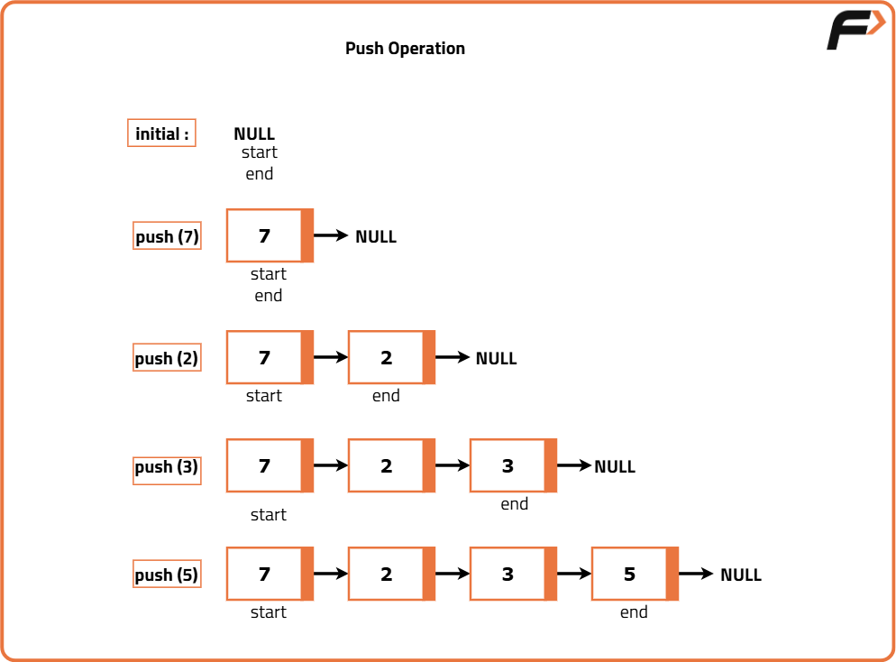
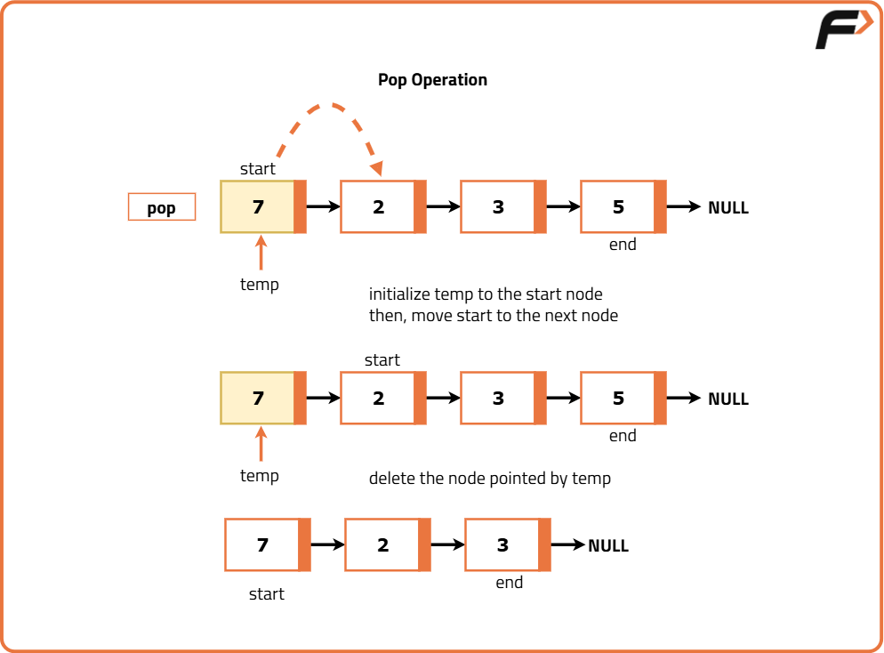

Implement Queue using Linked List
Problem Statement:
Implement a First-In-First-Out (FIFO) queue using a singly linked list. The implemented queue should support the following operations: push, pop, peek, and isEmpty.
Implement the LinkedListQueue class:
void push(int x): Adds element x to the end of the queue.
int pop(): Removes and returns the front element of the queue.
int peek(): Returns the front element of the queue without removing it.
boolean isEmpty(): Returns true if the queue is empty, false otherwise.
Examples
Example 1: Input: ["LinkedListQueue", "push", "push", "peek", "pop", "isEmpty"] [[], [3], [7], [], [], []] Output: [null, null, null, 3, 3, false] Explanation: LinkedListQueue queue = new LinkedListQueue(); - queue.push(3); - queue.push(7); - queue.peek(); // returns 3 - queue.pop(); // returns 3 - queue.isEmpty(); // returns false Example 2: Input: ["LinkedListQueue", "push", "pop", "isEmpty"] [[], [2], [], []] Output: [null, null, 2, true] Explanation: LinkedListQueue queue = new LinkedListQueue(); - queue.push(2); - queue.pop(); // returns 2 - queue.isEmpty(); // returns true
Disclaimer: Here is the practice link to help you assess your knowledge better. It's highly recommend trying to solve it before looking at the solution.
Approach
Algorithm
- Node Structure: Define a node that holds data and a pointer to the next node. This node acts as the building block of the linked list used in the queue.
- Queue Initialization: Initialize the queue with pointers to both the front and rear of the queue. Set these pointers to null initially, indicating an empty queue. Also, maintain a counter to track the number of elements in the queue.
- Enqueue Operation (Adding an Element):
- Create a new node with the given data.
- If the queue is empty, set both the front and rear pointers to this new node.
- If the queue is not empty, link the current rear node to the new node and update the rear pointer to point to the new node.
- Dequeue Operation (Removing an Element):
- Check if the queue is empty. If it is, return an appropriate message or handle the empty condition.
- If the queue is not empty, move the front pointer to the next node and delete the old front node.
- If the queue becomes empty after removal, set the rear pointer to null.
- Peek Operation (Accessing the Front Element):
- Check if the queue is empty. If it is, return an appropriate message or handle the empty condition.
- If the queue is not empty, return the data of the front node without removing it.
- Size Operation: Return the value of the counter tracking the number of elements in the queue.
- IsEmpty Operation: Check if the front pointer is null. If it is, the queue is empty; otherwise, it is not.


Code
#include <bits/stdc++.h>
using namespace std;
// Node structure
struct Node {
int val;
Node *next;
Node(int d) {
val = d;
next = NULL;
}
};
// Structure to represent stack
class LinkedListQueue {
private:
Node *start; // Start of the queue
Node *end; // End of the queue
int size; // Size of the queue
public:
// Constructor
LinkedListQueue() {
start = end = NULL;
size = 0;
}
// Method to push an element in the queue
void push(int x) {
// Creating a node
Node *element = new Node(x);
// If it is the first element being pushed
if(start == NULL) {
// Initialise the pointers
start = end = element;
}
else {
end->next = element; // Updating the pointers
end = element; // Updating the end
}
// Increment size by 1
size++;
}
// Method to pop an element from the queue
int pop() {
// If the queue is empty
if (start == NULL) {
return -1; // Pop operation cannot be performed
}
int value = start->val; // Get the front value
Node *temp = start; // Store the front temporarily
start = start->next; // Update front to next node
delete temp; // Delete old front node
size--; // Decrement size
return value; // Return data
}
// Method to get the front element in the queue
int peek() {
// If the stack is empty
if (start == NULL) {
return -1; // Top element cannot be accessed
}
return start->val; // Return the top
}
// Method to check if the queue is empty
bool isEmpty() {
return (size == 0);
}
};
int main() {
// Creating a queue
LinkedListQueue q;
// List of commands
vector<string> commands = {"LinkedListQueue", "push", "push",
"peek", "pop", "isEmpty"};
// List of inputs
vector<vector<int>> inputs = {{}, {3}, {7}, {}, {}, {}};
for (int i = 0; i < commands.size(); ++i) {
if (commands[i] == "push") {
q.push(inputs[i][0]);
cout << "null ";
} else if (commands[i] == "pop") {
cout << q.pop() << " ";
} else if (commands[i] == "peek") {
cout << q.peek() << " ";
} else if (commands[i] == "isEmpty") {
cout << (q.isEmpty() ? "true" : "false") << " ";
} else if (commands[i] == "LinkedListQueue") {
cout << "null ";
}
}
return 0;
}Complexity Analysis
Time Complexity: O(1) for all operations (push, pop, peek, isEmpty) since they involve constant time operations like pointer manipulation and value retrieval.
Space Complexity: O(n) where n is the number of elements in the queue, as we are using a linked list to store the elements. Each element requires space for a node structure.